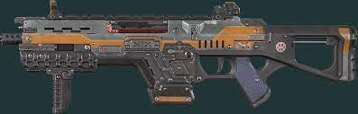
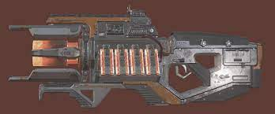
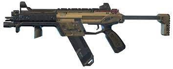

Weapons are an essential part of apex legends, oddly enough punching everything that you see is less than ideal and the wide range of guns on offer will help take you to victory! They are not all made equally however, some are more useful than others.

The Combat Advanced Round SMG (shortened C.A.R. SMG), C.A.R., or CAR, is a fully-automatic sub machine gun introduced in Season 11.svg Season 11 that utilizes both Heavy Rounds.svg Heavy Rounds and Light Rounds.svg Light Rounds.
The C.A.R. is compatible with two Extended Mags, Extended Heavy Mag.svg Heavy and Extended Light Mag.svg Light, although only one of them can be equipped at any given time. Regardless, the magazine gets extended even if the ammo type currently in use doesn't match the Extended Mag type.
When a C.A.R. spawns, it is always surrounded by Heavy Rounds.svg Heavy Rounds, its primary ammo type.

The Charge Rifle is a directed-energy battery-fed sniper rifle introduced in Season 3.svg Season 3 that utilizes Sniper Ammo.svg Sniper Ammo.
Each shot from the Charge Rifle has two part: a sustained laser, which deals 15 ticks of damage at 3 damage each, and a final discharge which deals 45 damage. The Charge Rifle is a hitscan weapon, meaning that its shots hit the target instantly and are not affected by gravity. Instead, the beam suffers from damage dropoff: starting at 150 meters, damage will decrease to as low as 50% at 400 meters. Charge Rifle shots consume 2 ammo each.

in: Submachine guns, Apex Legends
R-99 SMG
VIEW SOURCE
R-99
Rapid-fire Automatic SMG
General Information
Weapon Class
Submachine gun
Manufacturer
Lastimosa Armory
Availability
Floor loot
Variants
R-97
Specifications
Performance Statistics
The R-99 Submachine Gun (SMG), or simply the R-99, is an anti-personnel close-quarter Submachine gun employed by combatants in the Apex Games, appearing in Apex Legends. It is a successor to its Frontier War ancestor, the R-97 Compact SMG.
The R-99 features the highest rate of fire in the game, exceeding even the Devotion's 900rpm (once spun up). If a player's aim is accurate, then downing a target will take little time.